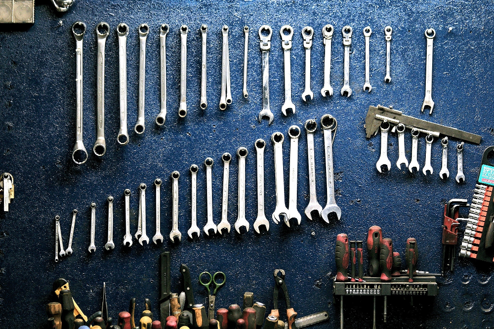
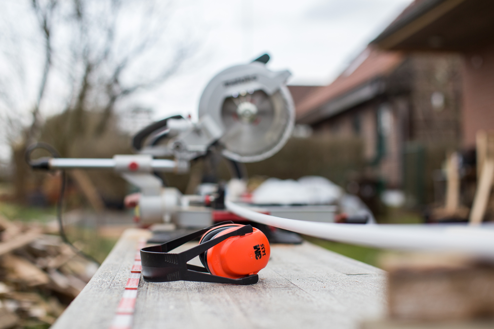
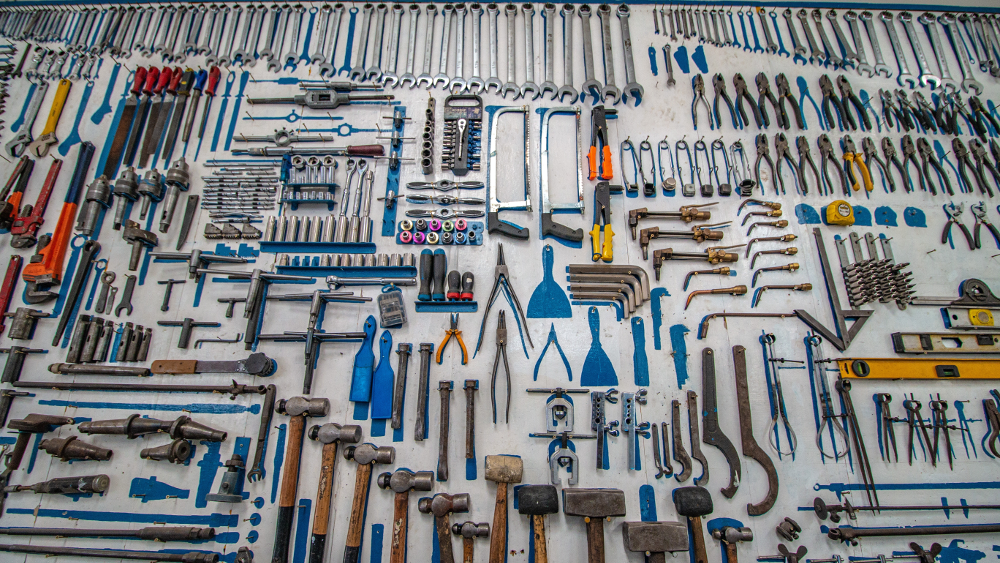
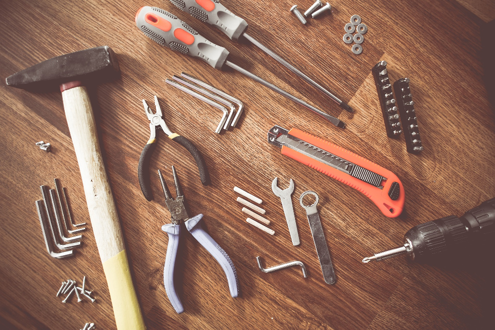

.svg)

Mission Statement
Have you ever "loaned" tools to a neighbor just to not get your tools back?
Are you too big of a "tool" to ask your neighbor for your tools back?
At use my tools we can help take "being a tool" out of loaning out your tools.

Rent Tools to your Neighbors
With our Serivce you can:
- List any tools that you have as "For Rent"
- Put your own price that you would like to list it for
- Find local people that need what you have to rent
- DO NOT WORRY about tools that are not returned

Rent Tools from your Neighbors
With our service you can:
- Search for any tool within a given radius
- See if and/when the tool is available for rent
- If the tool is available for rent immediatly you can book it at the listed price
- If you do not like the price you can negotiate the listed price

How it works
It's Easy:
- Renters list their tools for FREE
- Borrowers look through the inventory
- Borrowers find the tools they want and either accept the Renters price or negotiate.
- Borrowers pay the agreed upon fee plus a deposit to Use my Tools
- Once the tool is received and checked out by the Borrower the funds minus the deposit and a rental fee of 5% are released to the renter
- Upon successful return of tool to the Renter the deposit is the released back to the borrower minus a 5% deposit fee
- All disputes can and will be resolved by the Use my Tools legal team